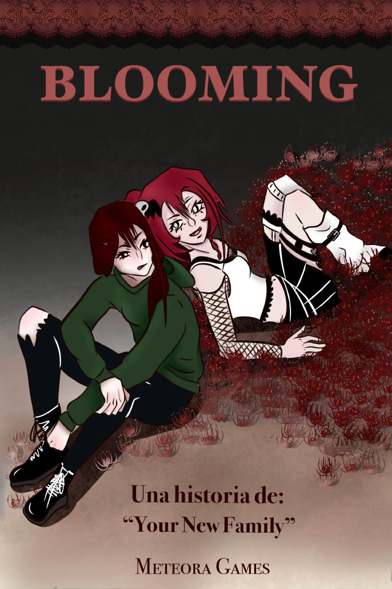
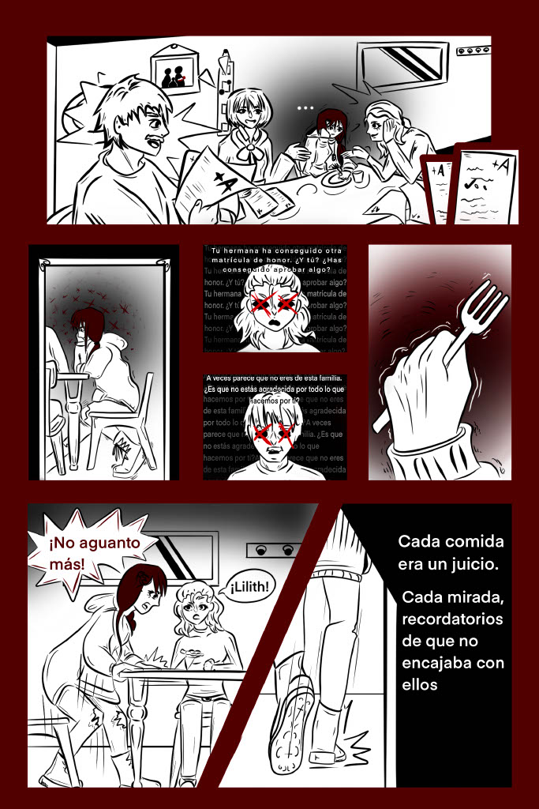
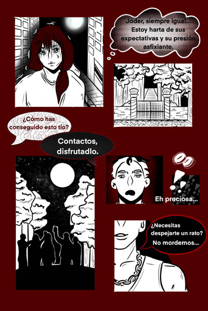
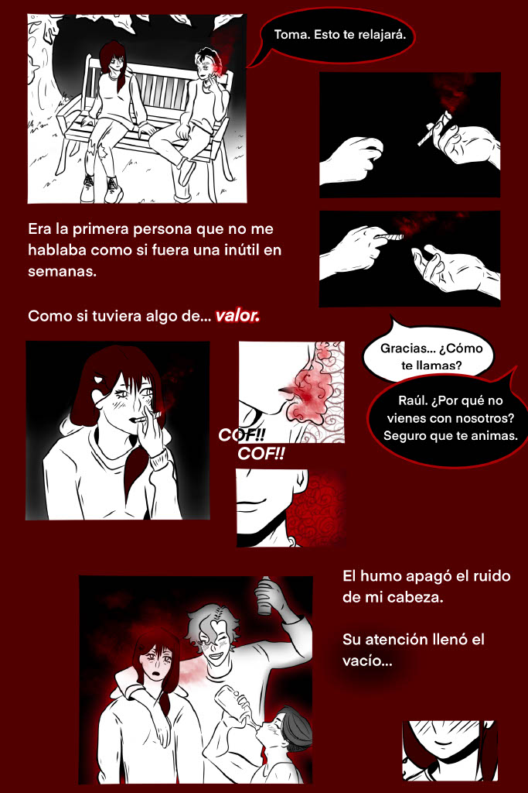
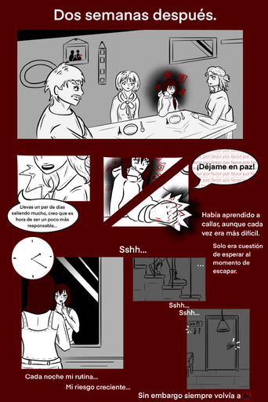
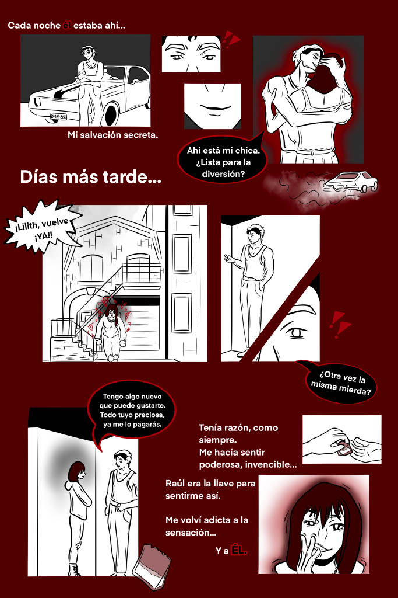
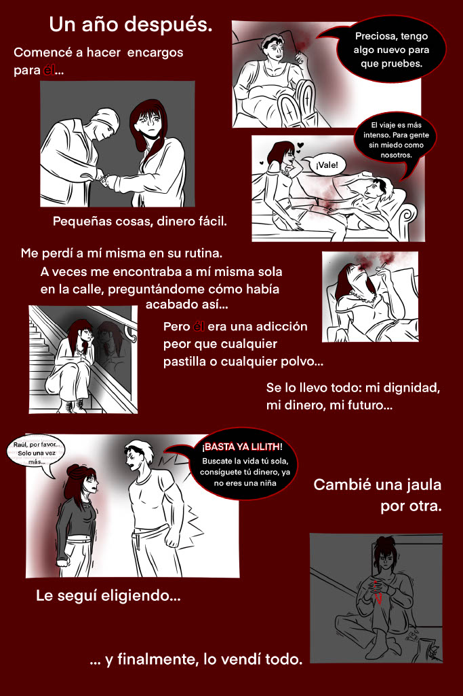
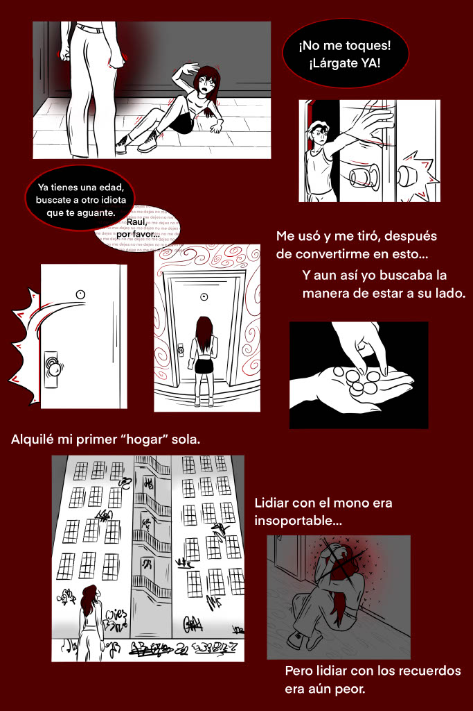
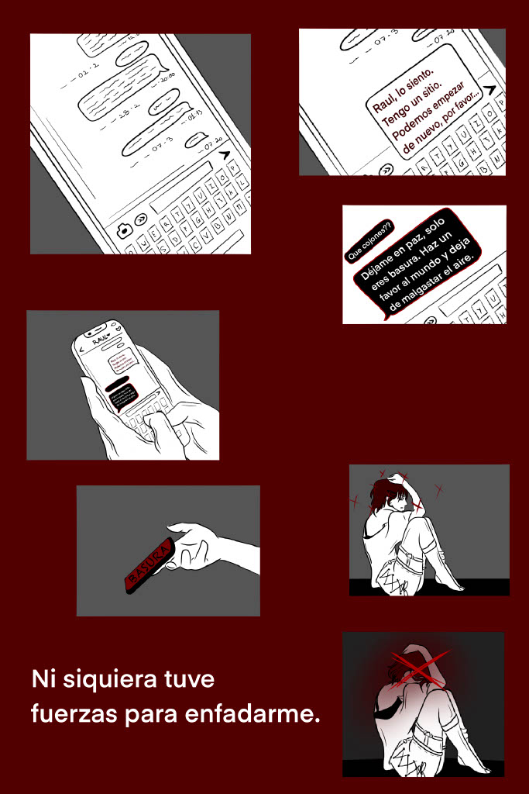

Lilith es una mujer consumida por la soledad, las adicciones y la sensación constante de no pertenecer a ningún lugar. Pasó gran parte de su vida sobreviviendo entre relaciones rotas, abandono y autodestrucción, hasta que terminó aceptando cualquier cosa que le ofreciera la ilusión de empezar de nuevo. Cuando “La Familia” apareció en su vida prometiéndole comprensión y un propósito, se aferró a ello con una desesperación casi peligrosa.
Personajes:
Lilith


Alpha
Alpha es el carismático líder de “La Familia”, un hombre capaz de hacer sentir comprendido incluso a quien ya había perdido toda esperanza. Habla con calma, escucha con atención y siempre parece saber exactamente qué decir para llenar el vacío de los demás. Bajo esa imagen casi paternal se esconde alguien obsesionado con el control, la devoción y la idea de construir un mundo “puro”, aunque para ello tenga que moldear, romper o sacrificar a quienes lo siguen.


Cairen
Cairen pasó gran parte de su vida sintiéndose invisible, creciendo entre normas estrictas y una necesidad enfermiza de demostrar que era útil para alguien. Encontró en “La Familia” la estructura y el reconocimiento que nunca tuvo fuera, aferrándose a sus reglas con una lealtad casi obsesiva. Siempre atento, siempre vigilante, Cairen vive convencido de que el orden mantiene unidas a las personas… aunque para conservarlo tenga que sacrificar su propia humanidad.
/Cairen_Normal.png)
/Cairen_Sonriendo.png)
/Cairen_Sonriendo_Hablando.png)
/Cairen_Destruido.png)
/Cairen_ConEscopeta.png)
/Cairen_Ensangrentado.png)
Puzzles:
Puzzle gramola:

El puzle de la gramola consiste en encontrar y colocar la canción correcta en una vieja máquina de música siguiendo pistas repartidas por el entorno.
Puzzle mesa:

El puzle de la mesa de los peluches consiste en interpretar una nota que recibes para descubrir el orden correcto en el que deben colocarse los peluches sobre la mesa.
Puzzle glifos:

El puzle de los glifos consiste en seguir las pistas de una nota para interactuar con varios símbolos repartidos por las viviendas en el orden correcto y así conseguir la llave de la habitación de Lilith.
Puzzle nube:

El puzle de Nube consiste en seguir el rastro que ha dejado el conejo de Amara hasta encontrarlo escondido dentro de un antiguo granero lleno de cajas.
Puzzle estatuas:

El puzle de las estatuas consiste en colocar varias estatuas en el orden correcto utilizando como pista un libro con dibujos encontrado dentro del laberinto.
Puzzle recreativa:

El puzle de la recreativa consiste en superar un pequeño minijuego dentro de una máquina arcade para desbloquear información y avanzar en la exploración de la zona.
Comic:









Cartas:
Cartas de Ayuda:


Cartas principales: